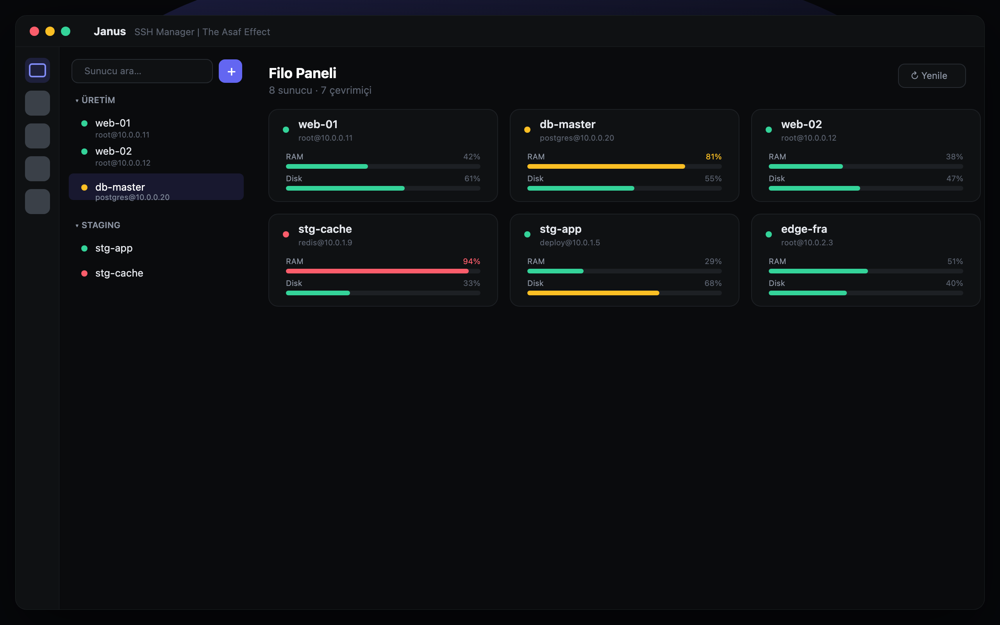
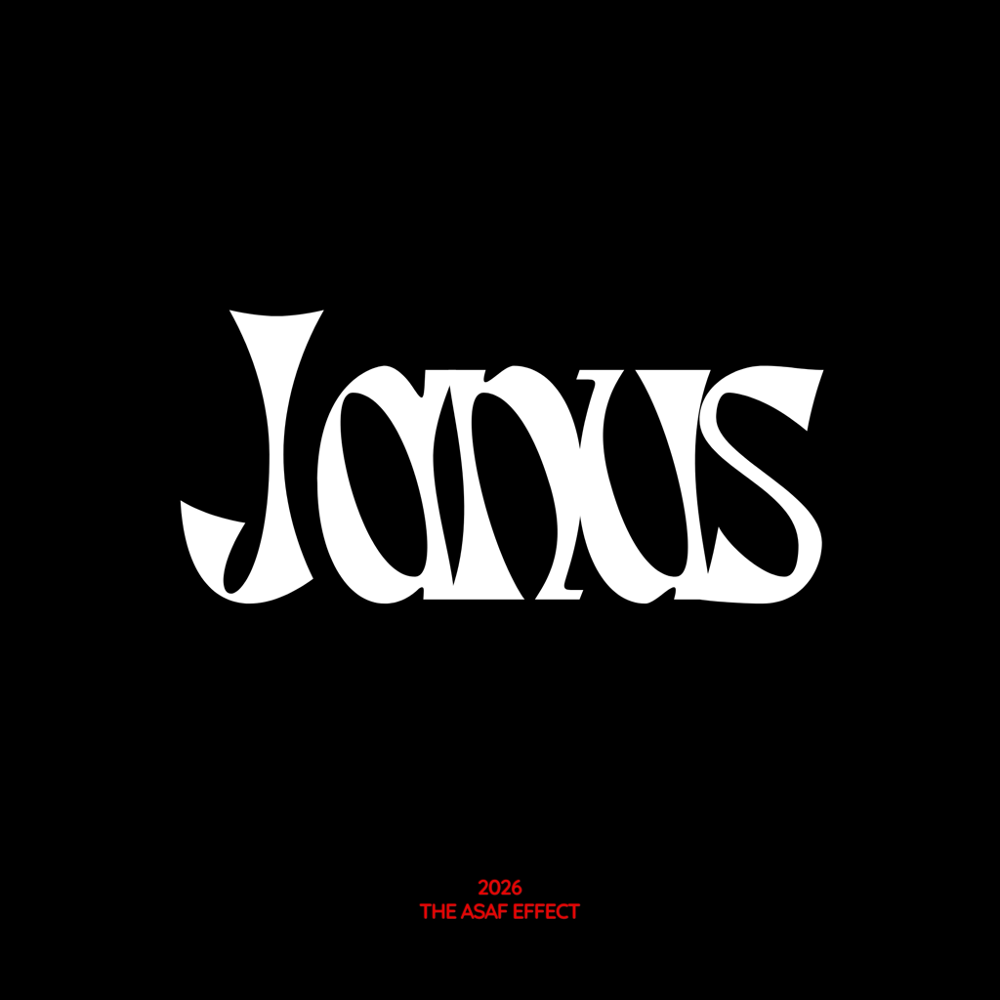

Sunucularının tamamı tek bir şifreli dosyada. Terminalden uzak masaüstüne, her şey tek yerde.
SSH, SFTP, VNC, port tünelleri, canlı filo izleme ve çoklu komut — dağınık araçlara veda et.

Onlarca sunucuyu yönetiyorum ve mevcut araçlardan sıkılmıştım — biri terminal için, biri dosya için, biri masaüstü için… hepsi ayrı, hepsi dağınık. Tüm sunucularımın tek, şifreli bir dosyada durduğu; bağlanmanın, izlemenin ve komut çalıştırmanın aynı çatı altında olduğu bir komuta merkezi istedim. Janus tam olarak bu. Kendi günlük işim için yaptım; umarım senin de işine yarar.

Çoklu sekme, arama, otomatik yeniden bağlanma, jump host. Gerçek bir terminal deneyimi.
Sunucunun ekranına SSH tüneli üzerinden şifreli bağlan; fareyle, klavyeyle kontrol et.
Tüm sunucuların CPU/RAM/disk durumu canlı, tek ekranda. Sorunu büyümeden gör.
Bir komutu onlarca sunucuda aynı anda çalıştır, çıktıları yan yana incele.
Dosya transferi ve local/remote/dynamic port forwarding — sürükle-bırak basitliğinde.
Konteyner ve servisleri başlat-durdur, süreçleri yönet, logları canlı izle.
Ayrıca: SSH anahtar yöneticisi, komut paleti (⌘K), 5 tema, Touch ID kilidi, snippet kütüphanesi ve otomatik güncelleme.
Her şey tek bir AES-256-GCM ile şifreli dosyada. Master parolan cihazından çıkmaz. VNC ve servis bağlantıları SSH tüneli üzerinden geçer — hiçbir şeyi internete açmana gerek yok. İstersen Touch ID ile aç, boşta otomatik kilitle, vault'unu tek dosyayla yedekle.